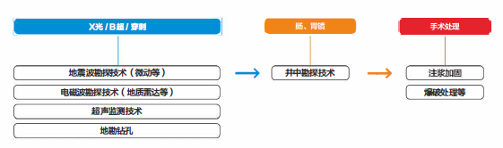

第三章：技术简介¶
3 什么是地球物理探测¶
地球物理勘探简称物探，它是指通过研究和观测各种地球物理场的变化来探测地层岩性、地质构造等地质条件。由于组成地壳的不同岩层介质往往在密度、弹性、导电性、磁性、放射性以及导热性等方面存在差异，这些差异将引起相应的地球物理场的局部变化。通过量测这些物理场的分布和变化特征，结合已知地质资料进行分析研究，就可以达到推断地质性状的目的。 地球物理勘探是以岩石、矿石（或地层）与围岩的物理性质差密度、磁化性质、导电性、放射性差异为基础。地质学专业术语，地球物理学用物理学的原理和方法，对地球的各种物理场分布及其变化进行观测。 地球物理勘探探索地球本体及近地空间的介质结构、物质组成、形成和演化，研究与其相关的各种自然现象及其变化规律。 在此基础上为探测地球内部结构与构造、寻找能源、资源和环境监测提供理论、方法和技术，为灾害预报提供重要依据。已故著名地球物理学家赵九章先生是这样形容地球物理学的——“上穷碧落下黄泉、两处茫茫都不见”。 地球物理学的研究内容总体上可以分为应用和理论地球物理两大类，属于地球物理学一级学科。
